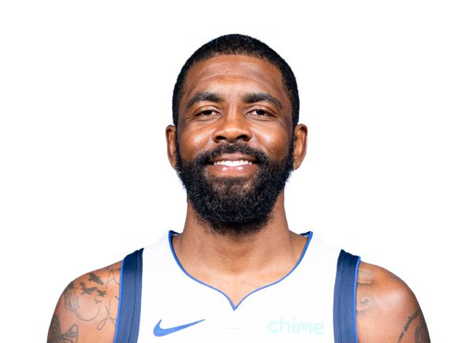

BASKETBALLKEEP
Dynasty · Redraft · Hardwood

PG · DAL
Kyrie Irving
Keep #102
Board #80
Age 34
2,788 BK Value
Plus
- Elite scoring. This is a 25-plus nights player in points leagues too.
- Elite threes. Volume from deep is the extra category.
- Helps in assists. Enough dimes to keep the column honest.
- Helps field-goal %. Efficient enough that you are not punting FG.
Minus
- Blocks are rare. Not a rim protector.
- Rebounds are thin. Guard/wing who does not crash.
- Turnovers run high. Pair him with safe handles.
- Age 34+ - minutes and games played are the hidden category.
Boards
Where the boards put him
High 81 · low 103.
| Board | Rank |
|---|---|
| RotoWire | 81 |
| Hashtag Points | 84 |
| Razzball | 84 |
| Yahoo Fantasy | 86 |
| NBA.com Fantasy | 86 |
| Basketball Reference ROS | 86 |
| Hashtag Basketball Dynasty | 89 |
| Fanspo Dynasty | 89 |
| KeepTradeCut NBA | 89 |
| Draft Sharks NBA | 89 |
| The Athletic | 95 |
| Late-Round Fantasy | 95 |
On the wire
Important Notes: Miami Heat Vs. Dallas Mavericks Preview, Injury Report, Betting, and More
Mavericks vs Heat Preview and Injury Report: Early game on NBA TV Yahoo Sports
Cooper Flagg Kyrie Irving
Kyrie Irving: Iffy for Wednesday
Irving (knee) is questionable for Wednesday's game against the Thunder.
Kyrie Irving
All players · The Keep · The Board · BK News · Calculator